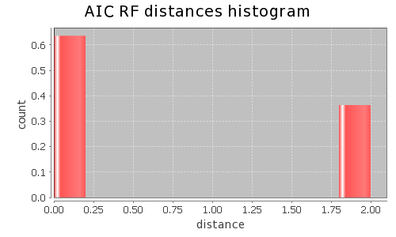
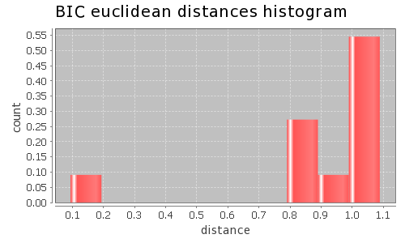
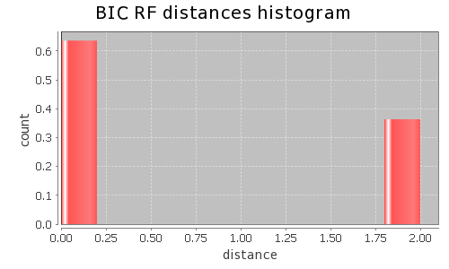

Application Meta
jModeltest 2.1
(c) 2011-onwards D. Darriba, G.L. Taboada, R. Doallo and D. Posada,(1) Department of Biochemistry, Genetics and Immunology
University of Vigo, 36310 Vigo, Spain.
(2) Department of Electronics and Systems
University of A Coruna, 15071 A Coruna, Spain.
e-mail: ddarriba@udc.es, dposada@uvigo.es
Tue May 14 03:46:58 EDT 2013
Linux 2.6.32-279.22.1.el6.x86_64, arch: amd64, bits: 64, numcores: 8
| Citation: | Darriba D, Taboada GL, Doallo R and Posada D. 2012. "jModelTest 2: more models, new heuristics and parallel computing". Nature Methods 9, 772. |
 Back to top
Back to top Settings
Arguments = -d aligned.fasta -g 4 -f -AIC -BIC -a -S BESTInput Alignment: "aligned.fasta"
NumTaxa = 10
Length = 708
Phyml version = 3.0
Phyml binary = PhyML_3.0_linux64
Candidate models = 12
number of substitution schemes = 3
including models with equal/unequal base frequencies (+F)
including only models without a proportion of invariable sites
including models with/without rate variation among sites (+G) (nCat = 4)
Optimized free parameters (K) = Substitution parameters + 17 branch lengths + topology
Base tree for likelihood calculations = Maximum Likelihood
Tree topology search operation = Best of {NNI, SPR}
Model Optimization Results
| ID | Name | Partition | -lnL | p | fA | fC | fG | fT | ti/tv | R(a) | R(b) | R(c) | R(d) | R(e) | R(f) | p-inv | shape |
|---|---|---|---|---|---|---|---|---|---|---|---|---|---|---|---|---|---|
| 1 | JC | 000000 | 5188.5781 | 18 | - | - | - | - | - | - | - | - | - | - | - | - | - |
| 2 | JC+G | 000000 | 4944.8786 | 19 | - | - | - | - | - | - | - | - | - | - | - | - | 0.4830 |
| 3 | F81 | 000000 | 5122.1250 | 21 | 0.2674 | 0.2966 | 0.1419 | 0.2942 | - | - | - | - | - | - | - | - | - |
| 4 | F81+G | 000000 | 4851.0526 | 22 | 0.2894 | 0.3129 | 0.1264 | 0.2713 | - | - | - | - | - | - | - | - | 0.4360 |
| 5 | K80 | 010010 | 5114.1072 | 19 | - | - | - | - | 1.1937 | - | - | - | - | - | - | - | - |
| 6 | K80+G | 010010 | 4851.4268 | 20 | - | - | - | - | 1.5931 | - | - | - | - | - | - | - | 0.4380 |
| 7 | HKY | 010010 | 5037.3994 | 22 | 0.2855 | 0.2947 | 0.1345 | 0.2854 | 1.2764 | - | - | - | - | - | - | - | - |
| 8 | HKY+G | 010010 | 4702.2334 | 23 | 0.3475 | 0.3058 | 0.1020 | 0.2447 | 3.0546 | - | - | - | - | - | - | - | 0.2850 |
| 9 | SYM | 012345 | 4996.1029 | 23 | - | - | - | - | - | 7.6000 | 6.9561 | 5.3405 | 1.0326 | 13.1737 | 1.0000 | - | - |
| 10 | SYM+G | 012345 | 4747.7440 | 24 | - | - | - | - | - | 5.7964 | 5.2323 | 4.0593 | 0.4508 | 18.5751 | 1.0000 | - | 0.4310 |
| 11 | GTR | 012345 | 4980.9361 | 26 | 0.2628 | 0.2711 | 0.1780 | 0.2881 | - | 6.0906 | 7.4681 | 4.0891 | 1.0999 | 10.0134 | 1.0000 | - | - |
| 12 | GTR+G | 012345 | 4697.6434 | 27 | 0.3563 | 0.2983 | 0.1165 | 0.2289 | - | 0.8791 | 3.9626 | 1.2112 | 0.4525 | 8.7585 | 1.0000 | - | 0.2850 |
There are 2 different topologies. The following table shows the models supporting each topology and the rank according to each Information Criterion, as well as Robinson-Foulds and Euclidean distances with the tree of the best-fit model.
| ID | Models | Topology | AIC | BIC | AICc | DT | |
|---|---|---|---|---|---|---|---|
| 0 |
JC+G F81+G K80 K80+G HKY HKY+G SYM+G GTR+G
|
RANK | 0 | 0 | - | - | |
| Weight | 1.0000 | 1.0000 | - | - | |||
| RF | 0 | 0 | - | - | |||
| AVG Distance | 7.7233e-01 | 7.1029e-01 | - | - | |||
| Distance VAR | 1.8396e-01 | 1.5518e-01 | - | - | |||
| 1 |
JC F81 SYM GTR
|
RANK | 1 | 1 | - | - | |
| Weight | 0.0000 | 0.0000 | - | - | |||
| RF | 2 | 2 | - | - | |||
| AVG Distance | 1.1591e+00 | 1.0756e+00 | - | - | |||
| Distance VAR | 6.4297e-05 | 6.4800e-05 | - | - |
AIC Selection Results
Model selected
| Model | GTR+G | ||
|---|---|---|---|
| partition | 012345 | ||
| -lnL | 4697.6434 | ||
| K | 27 | ||
| freqA | 0.3563 | R(a) | 0.8791 |
| freqC | 0.2983 | R(b) | 3.9626 |
| freqG | 0.1165 | R(c) | 1.2112 |
| freqT | 0.2289 | R(d) | 0.4525 |
| ti/tv | - | R(e) | 8.7585 |
| R(f) | 1.0000 | ||
| p-inv | - | gamma | 0.2850 |
Best model tree
(Loach:0.34089410,Carp:0.23189820,(Frog:0.34361160,(Chicken:0.91589224,(Human:0.91264405,((Mouse:0.18150314,Rat:0.15826624):0.23173105,(Whale:0.21320725,(Cow:0.19671639,Seal:0.33771080):0.06035076):0.07509747):0.19457368):0.32427891):0.08559465):0.28195816);
Display best model tree in PhyloWidget
| Model | -lnL | K | AIC | delta | weight | cumWeight |
|---|---|---|---|---|---|---|
| GTR+G | 4697.6434 | 27 | 9449.2869 | 0.0000 | 0.6434 | 0.6434 |
| HKY+G | 4702.2334 | 23 | 9450.4668 | 1.1799 | 0.3566 | 1.0000 |
| SYM+G | 4747.7440 | 24 | 9543.4881 | 94.2012 | 0.0000 | 1.0000 |
| K80+G | 4851.4268 | 20 | 9742.8536 | 293.5667 | 0.0000 | 1.0000 |
| F81+G | 4851.0526 | 22 | 9746.1051 | 296.8183 | 0.0000 | 1.0000 |
| JC+G | 4944.8786 | 19 | 9927.7571 | 478.4703 | 0.0000 | 1.0000 |
| GTR | 4980.9361 | 26 | 10013.8721 | 564.5853 | 0.0000 | 1.0000 |
| SYM | 4996.1029 | 23 | 10038.2057 | 588.9189 | 0.0000 | 1.0000 |
| HKY | 5037.3994 | 22 | 10118.7989 | 669.5120 | 0.0000 | 1.0000 |
| K80 | 5114.1072 | 19 | 10266.2143 | 816.9274 | 0.0000 | 1.0000 |
| F81 | 5122.1250 | 21 | 10286.2499 | 836.9631 | 0.0000 | 1.0000 |
| JC | 5188.5781 | 18 | 10413.1563 | 963.8694 | 0.0000 | 1.0000 |
| -lnL: | negative log likelihod |
| K: | number of estimated parameters |
| AIC: | Akaike Information Criterion |
| delta: | AIC difference |
| weight: | AIC weight |
| cumWeight: | cumulative AIC weight |
Confidence interval
There are 12 models in the 100.00% confidence interval:
GTR+G HKY+G SYM+G K80+G F81+G JC+G GTR SYM HKY K80 F81 JC
Euclidean distances histogram from each model optimized tree to GTR+G tree.

Robinson-Foulds distances histogram from the different topologies to GTR+G topology.
Robinson-Foulds distances histogram from the different topologies to GTR+G topology.
Model Averaged Phylogeny
| Selection criterion | AIC |
|---|---|
| Confidence interval | 100.00% |
| Consensus type | 50% majority rule |
(Loach:0.340894,Carp:0.231898,(Frog:0.343612,(Chicken:0.915892,(Human:0.912644,((Whale:0.213207,(Cow:0.196716,Seal:0.337711)1.00:0.060351)1.00:0.075097,(Mouse:0.181503,Rat:0.158266)1.00:0.231731)1.00:0.194574)1.00:0.324279)1.00:0.085595)1.00:0.281958);
Display consensus tree in PhyloWidget
BIC Selection Results
Model selected
| Model | HKY+G | ||
|---|---|---|---|
| partition | 010010 | ||
| -lnL | 4702.2334 | ||
| K | 23 | ||
| freqA | 0.3475 | R(a) | - |
| freqC | 0.3058 | R(b) | - |
| freqG | 0.1020 | R(c) | - |
| freqT | 0.2447 | R(d) | - |
| ti/tv | 3.0546 | R(e) | - |
| R(f) | - | ||
| p-inv | - | gamma | 0.2850 |
Best model tree
(Loach:0.32325461,Carp:0.20962093,(Frog:0.33208382,(Chicken:0.84298569,(Human:0.87591369,((Mouse:0.17770975,Rat:0.15826175):0.24023147,(Whale:0.21222760,(Cow:0.18102405,Seal:0.32067638):0.05746961):0.07113889):0.17572339):0.32062283):0.08165446):0.27106732);
Display best model tree in PhyloWidget
| Model | -lnL | K | BIC | delta | weight | cumWeight |
|---|---|---|---|---|---|---|
| HKY+G | 4702.2334 | 23 | 9555.4030 | 0.0000 | 0.9998 | 0.9998 |
| GTR+G | 4697.6434 | 27 | 9572.4729 | 17.0698 | 0.0002 | 1.0000 |
| SYM+G | 4747.7440 | 24 | 9652.9867 | 97.5837 | 0.0000 | 1.0000 |
| K80+G | 4851.4268 | 20 | 9834.1024 | 278.6994 | 0.0000 | 1.0000 |
| F81+G | 4851.0526 | 22 | 9846.4789 | 291.0759 | 0.0000 | 1.0000 |
| JC+G | 4944.8786 | 19 | 10014.4436 | 459.0406 | 0.0000 | 1.0000 |
| GTR | 4980.9361 | 26 | 10132.4957 | 577.0927 | 0.0000 | 1.0000 |
| SYM | 4996.1029 | 23 | 10143.1419 | 587.7389 | 0.0000 | 1.0000 |
| HKY | 5037.3994 | 22 | 10219.1727 | 663.7696 | 0.0000 | 1.0000 |
| K80 | 5114.1072 | 19 | 10352.9007 | 797.4977 | 0.0000 | 1.0000 |
| F81 | 5122.1250 | 21 | 10382.0612 | 826.6582 | 0.0000 | 1.0000 |
| JC | 5188.5781 | 18 | 10495.2803 | 939.8773 | 0.0000 | 1.0000 |
| -lnL: | negative log likelihod |
| K: | number of estimated parameters |
| BIC: | Bayesian Information Criterion |
| delta: | BIC difference |
| weight: | BIC weight |
| cumWeight: | cumulative BIC weight |
Confidence interval
There are 12 models in the 100.00% confidence interval:
HKY+G GTR+G SYM+G K80+G F81+G JC+G GTR SYM HKY K80 F81 JC

Euclidean distances histogram from each model optimized tree to HKY+G tree.
Euclidean distances histogram from each model optimized tree to HKY+G tree.

Robinson-Foulds distances histogram from the different topologies to HKY+G topology.
Robinson-Foulds distances histogram from the different topologies to HKY+G topology.
Model Averaged Phylogeny
| Selection criterion | BIC |
|---|---|
| Confidence interval | 100.00% |
| Consensus type | 50% majority rule |
(Loach:0.323255,Carp:0.209621,(Frog:0.332084,(Chicken:0.842986,(Human:0.875914,((Whale:0.212228,(Cow:0.181024,Seal:0.320676)1.00:0.057470)1.00:0.071139,(Mouse:0.177710,Rat:0.158262)1.00:0.240231)1.00:0.175723)1.00:0.320623)1.00:0.081654)1.00:0.271067);
Display consensus tree in PhyloWidget